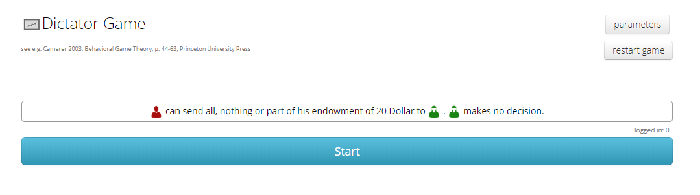
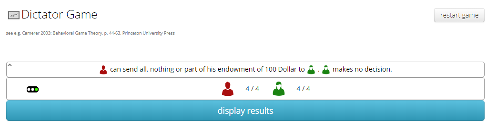
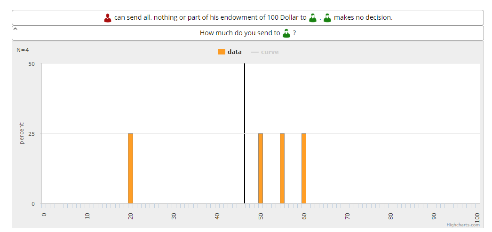
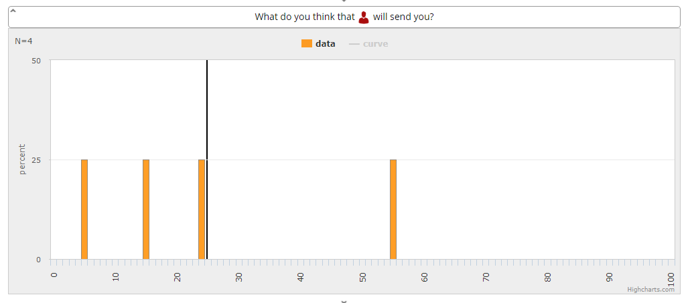
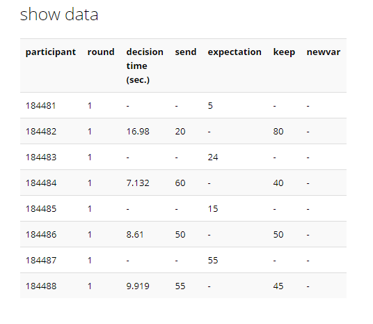

Experiment 4: Running the experiment
Protocol
You have to login to classEx before you begin your experiment. If you don’t have credentials, you can acquire them for free. Follow the instructions in the introduction to classEx. This section explains how to configure your participants’ password as well.
The dictator game is placed in the Standard Games section. You should activate the Play button to start configuring the experiment. Once you enter, you will see the administrator page shown in figure 4.1.
Figure 4.1. Admin page of the Dictator Game 
There are two kinds of participants. Red participants will have an endowment they may choose to distribute between them and their correspondent green partner. To configure the endowment, you may go to the parameters section shown in figure 4.2. Figure 4.2. Admin page of the Dictator Game

Your participants must have access to a web browser to participate. They can use their cellphones if they want. You should read the next instructions then:
- You will be grouped in pairs.
- Some of you will be able to send part of your endowment to another person in this classroom.
- Some others will make no decision; however, you will have to guess how much will your partner send you.
- Once I start the activity, you will enter to the link I give you; and, you will have to enter the credentials I tell you to participate. Since this is a short game, you will see how many participants take their decisions in your administrator page shown in figure 4.3.
Figure 4.3. Participants who take decisions are updated in real time
 Once every participant takes their decision you may discuss the results immediately with your students. l.
Class discussion
ClassEx allows you to have immediate results for discussion in class. The platform generates graphs so you can quickly observe the frequencies of transactions between students as shown in figure 4.4. To access this information activate the display results button.
Figure 4.4. Distribution of transactions between participants 
You can observe the distribution of expectations as well. See figure 4.5.
Figure 4.5. Distribution of expectations between participants 
If you prefer tables, classEx lets you visualize a records table like the one shown in figure 4.6. To find it look in the Data tab, and Show data option.
Figure 4.6. Records table  With this information you may stimulate discussion with the next questions.
| Aspect | Marginal utility |
|---|---|
| Learning | This question refers to the social interaction component of the activity. Some of the students may have kept less than their entire endowment. This question explores the multiple elements that affect marginal utility. Sometimes, benefits are not material. Was it because they felt good by giving something? Was it because they felt bad by keeping everything? |
| Question | Why didn’t some of you transfer one unit (enough amount to buy some little snack) less to your partner? |
| Aspect | Identifiable interactions |
|---|---|
| Learning | This is a question to explore hypothetical variations to the experiment. Students may approach it from a theoretical perspective; and, they would find that people still keeps their full endowment. Participants of the experiment may conjecture what they think they would make under this situation. Discussing a dialog between theory and intuition may generate critical reasoning and creative competences. |
| Question | What would have happened if you had had your partner in front of you when you took the decision? |
| Aspect | Public policy |
|---|---|
| Learning | One of the implications of this experiment suggests that expensive institutions are not always required to reduce situations like state corruption. Students should get to the open question “What conditions make people avoid taking advantage even if there is no punishment or violation of any nature?” This points to un understanding about how policy oriented research operates. |
| Question | State corruption is a problem in many countries. How could you improve audit programs to reduce this kind of situation? |